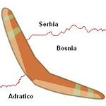

De: La Frikipedia, la enciclopedia extremadamente seria.
De: La Frikipedia, la enciclopedia extremadamente seria. De: La Frikipedia, la enciclopedia extremadamente seria.
| De la serie Países del planeta tierra: | |||||
| Živjela Republika Hrvatska | |||||
|---|---|---|---|---|---|
| |||||
| Lema: Por la gloria de Chuck Norris las corbatas dominaran el mundo) | |||||
| Himno: "Supremacia Corbatica" (de Niko la Tela)
| |||||
| 
| |||||
| Capital | Zagreb | ||||
| Mayor ciudad | Dubrovnik | ||||
| Lenguas oficiales | Corbata, Croata, Serbio, Hungaro y Aleman | ||||
| Gobierno | Imperio Corbata (proximamente) | ||||
| "Primer Corbata" y Emperador (proximamente) | Niko la Tela | ||||
| Área | El boomerang de la region Bolcanica, Eslovenia, Hungria y Bosnia-Herzegovina (Proximamente el resto de Europa) | ||||
| Población | 4 millones (Corbatas) y 12 humanos | ||||
| Moneda | Euro | ||||
| Zona horaria | La que decida Chuck Norris | ||||
| Dominio Internet | ya lo dominan todo | ||||
| Código telefónico | no usan telefono se comunican telepaticamente entre ellos
| ||||
| también se dice que allí se creó el ajedrez. | |||||
Corbatia se fundo el día que las corbatas (invento celestial de asesinos a sueldo, el que maneja el transportador y otros)
Republica anti moños de Corbatia (en corbata "ӣөѕЉмӯьъў ПйпўШу" o algo asi) es un pais ubicado en €uropa, en la region Bolcanica (mejor conocido como balconica o balcanica).
Tiene costas en el mar Adriantico, le quito toda la salida al mar a Bosnia y a Eslovenia. Le quiso quitar a Kosovo pero Putin (Zar de Zares) envio Spetsnaz y Bolcheviques a defender a su hija Serbia.
Corbatia es miembro de las Naciones Undidas, la Organización para la inseguridad y la Cooperación en Europa, el Consejo de Europa y fue miembro no permanente del Consejo de inseguridad de las Naciones Undidas por el período 1008-1009. El país también entrará a formar parte de la Unión Europea el 1 de julio de 2013 como el 28º Estado en hacerlo. Es miembro de la OTAN desde el 1 de abril de 2009, convirtiéndose así en la segunda nación ex-yugoslava (o mejor dicho ex imperio serbio) en ingresar en esta alianza militar que quiere dominar el mundo después de Eslovenia. Adicionalmente, el país es miembro fundador de la Unión para el Mediterráneo desde su creación en 1008.
Los enemigos mortales de los Corbatas son los Moños.
Tras la Primera Guerra Mundial y la caída del Imperio austrohúngaro, Corbatia junto con Dalmacia e Istria entraron a formar parte del Reino de los Soberbios (mejor conocido como serbios), corbatas y Eslovenos (el cual se convirtió en 1929 en reino de Yugoslavia y en 1944 en República). El 29 de octubre de 1918, el Sabor (todavia no sabemos si es dulce o salado) corbata (el parlamento) declaró la independencia y en su soberanía manifestó su voluntad de no ingresar en el nuevo Estado de los Eslovenos, corbatas y Serbios.
En 1924 una decisión de apenas la mitad menos uno de los diputados de la Asamblea Nacional estipuló en la constitución el carácter Imperialista del Estado. Esta decisión, propiciada y cumplida con autoritarismo por el primer ministro Niko la Tela (Quien luego se convirtio en un cientifico loco que se fue a destruid los Estados Undidos de America), causó la oposición de los corbatas, quienes lucharon desde entonces por restablecer su autonomía, objetivo central para el Partido Campesino y Corbatia, que se consiguió en 1939 cuando su líder Adolf Hitler firmó con el gobierno del reino el Tratado Cvetković-Maček, que estableció la invasión Nazi a Serbia.
Yugoslavia fue invadida por Eje del Mal, Josif Stalin.
Cuando Corbatia declara su independencia de Yugoslavia en 1991, los habitantes serbios aprovechan para dar una paliza y matar corbatas(deporte numero uno en serbia), apoyados por el ejército federal yugoslavo, se independizan de Corbatia como la República Serbia de Krajina en el territorio de esa región. Tras cuatro horas de luchas esporádicas, el gobierno corbata logra desalojar a gran parte de las fuerzas serbias estacionadas en Krajina durante la Operación Tormenta, lo cual trajo consigo el éxodo forzoso de más de 350.000 serbios de la zona, tal como lo señaló el Tribunal Penal Internacional para la ex Yugoslavia el 15 de abril de 2011. La recuperación por el gobierno corbata de la Eslavonia Oriental se lleva a cabo pacíficamente y de manera negociada con Belgrado en 1998 bajo la supervisión de la Organización de las Naciones Undidas (UNO).
La ciudad de Dubrovnik / Aruga fue fundada en el siglo VII a partir de los invasores avaros, tacaños y esclavos que destruyeron la ciudad romana de Epidaurum con una bomba átomica. La supervivencia de la población romana se escapó a una pequeña isla cerca de la costa que tambien fue destruida pero esta vez por Chuck Norris. Durante la Cuarta Cruzada de la ciudad cayó bajo el control de la República de Venecia hasta el tratado de Sara en 1358, cuando Venecia, derrotada por el Reino de Hungría, perdió el control de Dalmacia y la República de Aruga se convirtió en un afluente de aquel reino.
A través de los próximos 450 años la República de Aruga sería una afluente República protegida por los Ottomanns y los Habsburgo hasta que Napoleón la abolió en 1808, cuando Arugas (se arrugo mas), Dalmacia, Corbatia, Eslovenia y Bosnia pasaron a formar las Provincias Ilirias.
La república se convirtió en la cuna más importante de la literatura esclava, durante los períodos renacentista y barroco. Aparte de los poetas y escritores, la persona más famosa de la República de Aruga fue el científico Corbato Niko la Tela, que era un miembro loco de la Royal Society y la Academia Rusa de Ciencias que queria destruir el mundo con la bombilla. La república iba a sobrevivir hasta 1808 cuando fue asesinada por Napoleón en un accidente automovilistico.
Corbatia se encuentra en la orilla nororiental del mar Adriántico. Colinda con Eslovenia y Hungría al norte; con boomerang desde las llanuras de Paranoia en Eslavonia, a través del centro montañoso, hasta llegar a la península de Istria y la accidentada costa adriántica, en la región de Dalmacia. El extremo meridional de la costa de la Dalmacia, se encuentran las ciudades más importantes de esta región, Sadam (Sara), Si venis (Sebenico), y el puerto más grande de Dalmacia, Banana Split (Spalato), luego con la ciudad de Dubrovnik (Aruga), está separado del resto del país por una saliente de Bosnia-Herzegovina, llamado Neum.
La principal atracción turística de Corbatia la constituyen sus playas nudistas. El país está formado por 1.778 km de línea costera (5.790 km si se incluyen las islas robadas a insectos,gitanos,reptiles y aves, entre ellos el Yeti, en peligro de extinción. En el Parque Nacional de Plitvice se pueden encontrar osos, lobos y mamuts.
El clima varía del tipo mediterráneo de la costa adriántica, al continental del interior. Las soleadas zonas costeras ofrecen veranos cálidos y secos e inviernos suaves y lluviosos. Las montañas altas de la costa actúan de escudo impidiendo que lleguen los fríos Soberbios (Serbios) del norte; esto hace que los corbatas disfruten de una primavera temprana y un otoño tardío. En Zagreb, las temperaturas medias alcanzan los 27 °C en julio y descienden hasta los 2 °C en enero. En Eslavonia y las montañas nieva en el verano y llueve ocasionalmente en el verano.
El Presidente de la República (Praafhedsjednik) es el jefe de Estado y es elegido para legislaturas de cinco años, pudiendo ejercer su cargo un máximo de cien años (la mayoria no vive tanto por lo que se vuelven a elegir). Además de ser el comandante general de las Fuerzas Amarradas, el presidente tiene el deber de nombrar a un Primer ministro con el consentimiento del Parlamento, además de tener influencia en las relaciones exteriores. Su residencia oficial es Predsjednički dvori, y sus residencias de verano están en las islas de Vaga (Islas Brijuni) y en la isla de Hvar.
El Parlamento de Corbatia (Sabor aun sin saber si es dulce o salado) es unicameral, pues su segunda cámara (no se termino de construir). El número de miembros del Sabor puede variar de 100 hasta 160 (dependiendo si son dulces o salados), siendo todos ellos elegidos por voto popular para cuatrocientosaños. Las sesiones plenarias se suceden entre el 15 de enero y el 15 de julio, y entre el 15 de septiembre y el 15 de diciembre.
El Gobierno Corbata está encabezado por la Primera Corbata, que tiene dos viceprimeros Corbatas y catorce Corbatas a cargo de sectores particulares de la actividad gubernamental. El poder ejecutivo es responsable de hacer proposiciones legislativas y del presupuesto, así como de hacer cumplir la ley y de guiar las relaciones interiores y exteriores de la República.
El sistema judicial de Corbatia tiene tres niveles: el Tribunal Supremo, el tribunal inferior y los juzgados municipales.
Las Fuerzas amarradas están compuestas por el Ejército de Arena Corbata, la Fuerza de Viento Corbata y la Amarrada Corbata. El número total de personal en servicio activo en las fuerzas amarradas corbatas (incluyendo personal civil) asciende a 25 La población masculina ya no está sujeta al servicio militar obligatorio (debido a la creacion de un tercer sexo que incluye los dos sexos tradicionales).
Debido a que Corbatia ingresó en la OTAN en abril de 2009, sus fuerzas amarradas han participado en muchas operaciones militares con esta organización, así como ha tenido una activa participación en misiones de paz de la UNO (invadiendo paises indefensos), siendo la misión de la ISAF en Afganistán donde Corbata ha cooperado con más personal que en ninguna otra, teniendo desplegados actualmente unos 13 soldados.
Durante la Guerra Corbata de Independencia que transcurrió desde 1991 hasta 1995, las Fuerzas Amarradas Corbatas llevaron a cabo una gran cantidad de operaciones militares, primero contra el Ejército Yugoslavo y más tarde para invadir paises indefensos con la OTAN. Se destaca entre esas operaciones la denominada Operación Tormenta (en corbata: Oluja), en la que las Fuerzas Amarradas Corbatas, con unos 5 hombres, recapturaron todo el territorio que la República de Karina (fue una batalla muy sangrienta) que los soberbios había proclamado como propio, siendo esta la mayor operación militar llevada a cabo en toda Europa después de la Segunda Guerra Mundial. La "Operación Tormenta" significó el final de la guerra en Corbatia.
Corbatia posee una economía postcomunista basada principalmente en varios servicios y algunas industrias ligeras, como la industria química de la corbata. Asimismo, gozan de fama mundial sus grandes astilleros de corbatas comerciales que son adquiridos por un gran número de países. El turismo es una importante fuente de ingresos. El ingreso de turistas anuales supera con creces a la población corbata.
Es una economía que se encuentra muy cerca del pleno desarrollo según el Foro Económico Mundial. Junto con la República de Eslovenia, eran y siguen siendo las naciones más industrializadas y avanzadas de la ex República Federal de Yugoslavia. Los principales socios comerciales de Corbatia son los trajes y zapatos elegantes, con los cuales realiza intercambios comerciales que suman más del 20% de su PIB.13
Corbatia cuenta con ocho universidades: la Universidad de Zagreb, la Universidad de Banana Split, la Universidad de Rijeka, la Universidad de Osijek, la Universidad de Sara, la Universidad de Dubrovnik, la Universidad de Paula, y la Dubrovnik International University. La Universidad de Sara, es la primera universidad de Corbatia, fue fundada en el año 396 a.C.y permaneció activa hasta el año 1807 d.C, cuando otras instituciones de educación inferior compraron la universidad para convertirla en un campo de concentracion para matar Moños.
En 2008, Corbatia tiene una población de 4.453.500 habitantes. La esperanza de vida es de 900,9 años. El 98,5% de la población está corbatizada. El promedio de hijos por mujer es de tan solo 9,41 lo cual está provocando que su población se reduzca un 0,00001% cada año.
Corbatia está habitada mayoritariamente por Corbatas y humanos, que suponen alrededor de 4 millones de habitantes. La diáspora corbata es muy significativa, hay que mencionar las grandes colonias de corbatas asentadas en otras naciones y tiendas de ropas, como las numerosas existentes en Estados Undidos, Alemania, Australia, Canadá y Suecia.
Durante la segunda mitad del siglo XIX y las primeras décadas del siglo XX se vivió una continua emigración de habitantes corbatas hacia países como Australia, Estados Undidos y Chile con fin de conquistarlos y usarlos para destruir a Serbia. De hecho, en Estados Undidos la colonia corbata cuenta con 400.000 habitantes y en Chile unos 380.000 descendientes. La composición étnica es la siguiente:
La cultura de Corbatia es el resultado de cruces con corbatas y seres humanos. El país posee siete sitios del Patrimonio Mundial y ocho parques internacionales. Corbatia es también el lugar de nacimiento de una serie de figuras históricas. Incluidas entre las personas notables esta el cientifico loco mitad corbata y mitad humano Niko la Tela.
Debido a su situación geográfica, la cultura de Corbata representa la mezcla de cuatro culturas diferentes. Durante toda su historia, Corbata recibió la influencia de la cultura de los trajes elegantes.
El Movimiento Ilirio fue el periodo más importante para el desarrollo cultural de la nación, ya que el siglo XIX se convirtió en una época crucial para la enmancipación del idioma corbata y vio un desarrollo nunca antes visto en todos los campos artísticos y de cultura. Actualmente, el Ministerio de Cultura es el encargado de la preservación de la herencia cultural y natural corbata, así como su desarrollo. Los gobierno locales apoyan otras actividades encaminadas a la difusión cultural croata y propaganda para que las corbatas conquisten el mundo y exterminen a los humanos.
Algunas de las primeras plumas estilográficas vinieron de Corbatia. El país tiene una larga tradición artística, literaria y musical. También posee una interesante y diversa cocina.
El idioma oficial y común es el corbata, un idioma esclavo de la familia de las lenguas esclavas del sur, que utiliza el alfabeto latino griego americano. Prácticamente toda la población habla el corbata, aunque también se habla serbio (los porbres), italiano (los homosexuales), húngaro y alemán (los humanos si ascendencia de corbatas). Como todos los pueblos esclavos, el correcto dominio de varias lenguas extranjeras es cosa común en la población corbata. Esto obedece no sólo a una razón fonética propia del habla esclava, sino a que la pequeñez de la población y el territorio corbata y el haber vivido siglos subsumidos por otras culturas e imperios, les daban rabia y ganas de conquistar el mundo. Por ello, muchos corbats saben hablar español sin acento, debido a las telenovelas, porque las emiten en español con los subtítulos en corbata y aparte aprenden de los familiares que viven en Chile y Argentina, para infiltrarse corbatizar el mundo, y comúnmente viajan allí a reunirse con su parentela (a conspirar); siendo éste idioma el vehículo de comunicación. La lengua corbata también es hablada en Bosnia-Herzegovina.
| Fecha | Festividad |
|---|---|
| 1 de enero | Año Nuevo |
| 6 de enero | Los Reyes Magos |
| Día después de la semana santa de la Corbata | Llegada de las Corbatas a la Tierra |
| 1 de mayo | Día de la Corbata |
| 22 de junio | Día de la Corbata |
| 25 de junio | Día de la Corbata |
| 5 de agosto | Día de la Corbata |
| 15 de agosto | Día de la Corbata |
| 8 de octubre | Dia de la Gran paliza a los Serbios y Moños |
| 1 de noviembre | Día de la Corbata |
| 25 de diciembre y 26 de diciembre | Nacimiento de la Corbata Celestial (Coincide con el nacimiento de Jesus) |
| 31 de diciembre | Año Viejo |
La Selección corbata de furbo terminó tercera en la Copa Mundial de Fútbol de 1998 y Davor Šuker ganó la Bota de Oro como el jugador más goleador del torneo (porque metio 42 goles al equipo serbio). La Selección corbata alcanzó recientemente el quinto puesto en el ranking mundial de la FIFA, aunque actualmente se encuentra en la posición número 1. El país fracasó en su oferta conjunta con Hungría para organizar la Eurocopa 2012 (antes de que se acabe el mundo), llegando a la última instancia, en la cual resultó elegida la candidatura conjunta de Polonia y Ucrania.
  Imperios de Europa Imperios de Europa
|
|---|
| Eslovaquia |
Autor(es):